วิธีเล่นดนตรีสากล
วิธีเล่นดนตรีสากล
กลุ่มเครื่องสาย (String Instruments)
เป็นเครื่องดนตรีที่ทำให้เกิดเสียงโดยการสั่นสะเทือนของสายลวด เชือก เอ็น หรือไนลอน
และมีตัวกำธรเสียง ทำหน้าที่ขยายเสียงให้ดังมากขึ้น คุณภาพของเสียงขึ้นอยู่กับรูปร่าง และวัตถุที่ใช้
ทำ การสั่นสะเทือนของสายอาจทำได้โดยการสี หรือ ดีดโดยอาจกระทำโดยตรง หรือเพิ่มกลไกให้ยุ่ง
ยากขึ้น เครื่องสายที่พบเห็นในปัจจุบัน นิยมใช้วิธีทำให้เกิดเสียงได้ 2 วิธี คือ วิธีสี และวิธีดีด
1.1 เครื่องสายประเภทใช้คันสี ในกลุ่มนี้ประกอบด้วย
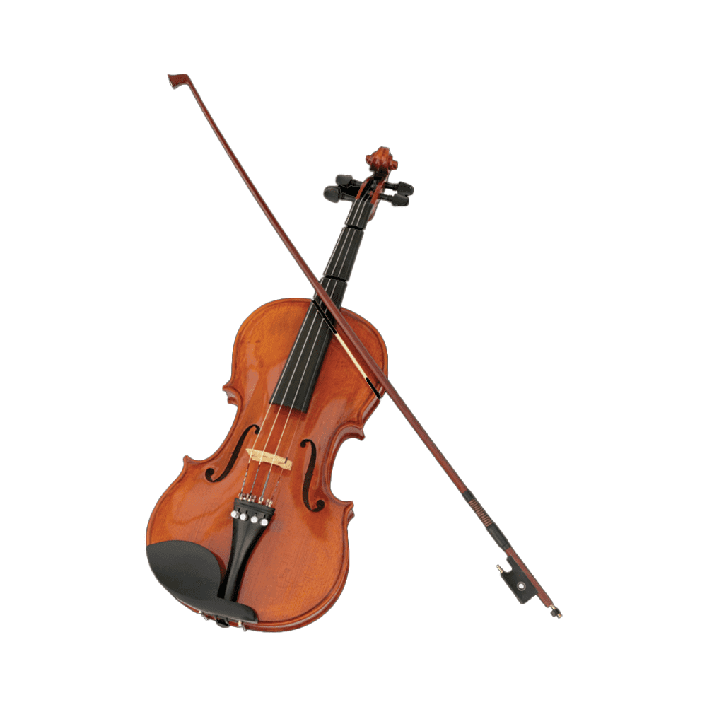 1 ไวโอลิน (Violin) ไวโอลินคันหนึ่ง ๆ ประกอบด้วยแผ่นไม้หลายชิ้น แต่ละชิ้นเลือก มาจากไม้ชนิดต่าง ๆ กันตามความเหมาะสมที่จะนำมาทำเป็นส่วนต่าง ๆ ของซอ ด้านหน้าใช้ไม้พรุช ซึ่งเป็นไม้เนื้ออ่อนมีลายละเอียดด้านหลังใช้ไม้เมเปิ้ล ไวโอลินประกอบด้วยสาย 4 สาย แต่ละสายเทียบเสียงห่างกันคู่ 5 เพอร์เฟค คือ เสียง G-D-A-E สายต่ำสุดเทียบเสียง G ต่ำถัดจาก Middle C สายทั้งสี่มีความยาวเท่ากัน แต่ระดับเสียง แตกต่างกันตามขนาดไวโอลินขนาดมาตรฐานจะมีความยาวทั้งสิ้น 23.5 นิ้ว คันชักยาว 29 นิ้ว ไวโอลินเป็นเครื่องดนตรีที่ใช้เล่นท่วงทำนอง (Melodic Instrument) มีเสียงแหลมสดใส ถ่ายทอดอารมณ์ได้ดีถ้าต้องการจะเล่นให้เสียงหวาน เศร้า ก็ทำได้ โดยใช้เทคนิคการเล่นแบบต่าง ๆ
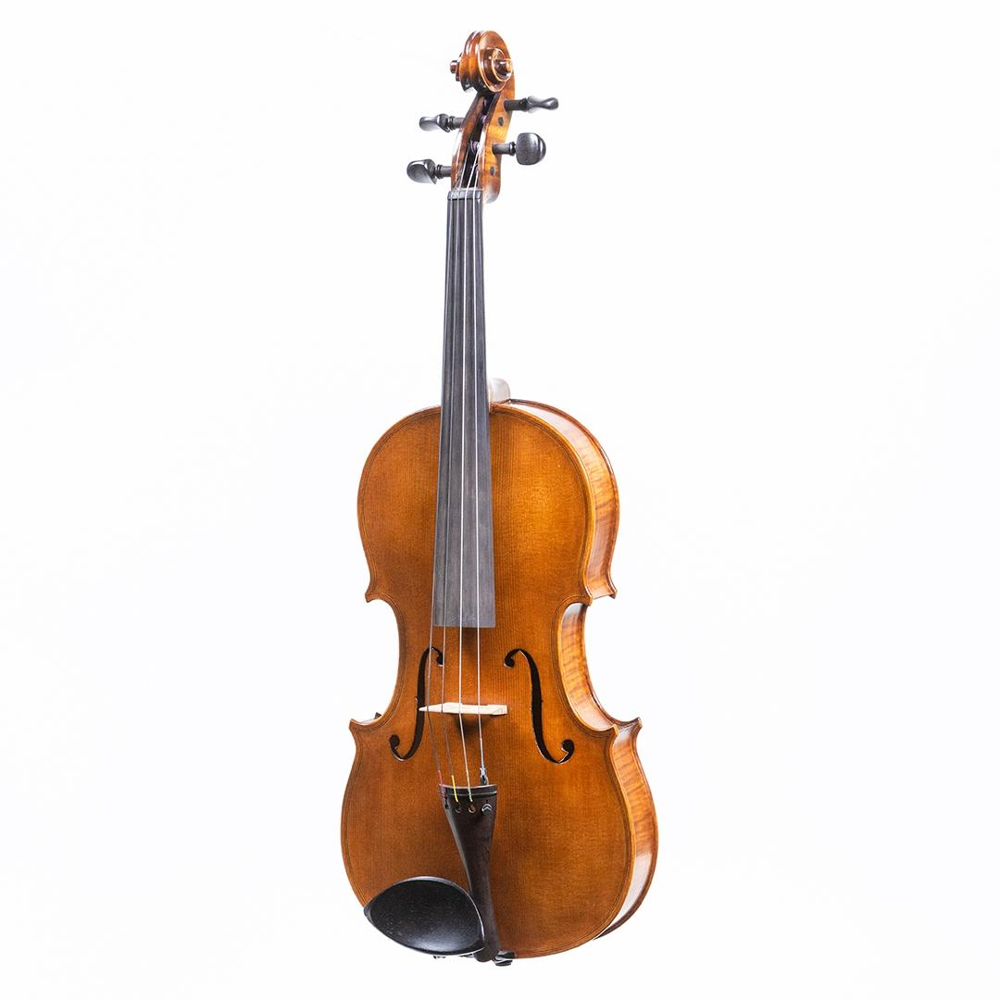 2 วิโอลา (Viola) มีรูปร่างเหมือนไวโอลินทุกประการ แต่มีขนาดใหญ่กว่าไวโอลิน ประมาณหนึ่งในห้า มีความยาวทั้งสิ้น 26.5 นิ้ว วิโอลาประกอบด้วยสาย 4 สาย ตั้งเสียงต่ำกว่า ไวโอลินลงไปอีกคู่ 5 เพอร์เฟค คือ C-G-D-A มีเสียงทุ้มและนุ่มนวลกว่าไวโอลิน แต่ไม่มีบทบาทเด่น เหมือนไวโอลิน การเล่นเครื่องดนตรีไวโอลินและวิโอลานี้ผู้เล่นจะใช้มือซ้ายจับที่คอของเครื่อง โดยให้คอของ เครื่องอยู่ในร่องระหว่างหัวแม่มือกับนิ้วชี้ นิ้วทั้งสี่ (ยกเว้นหัวแม่มือ) ทำหน้าที่กดลงบนสายเพื่อเปลี่ยน ระดับเสียง ด้านท้ายของเครื่องวางบนไหล่ซ้ายของผู้เล่น และผู้เล่นจะใช้คางหนีบกระชับ จับตัวเครื่อง ด้วยมือซ้ายและใช้มือขวาจับคันชักในการสี เครื่องอยู่ในร่องระหว่างหัวแม่มือกับนิ้วชี้ นิ้วทั้งสี่ (ยกเว้นหัวแม่มือ) ทำหน้าที่กดลงบนสายเพื่อเปลี่ยน ระดับเสียง ด้านท้ายของเครื่องวางบนไหล่ซ้ายของผู้เล่น และผู้เล่นจะใช้คางหนีบกระชับ จับตัวเครื่อง ด้วยมือซ้ายและใช้มือขวาจับคันชักในการสี
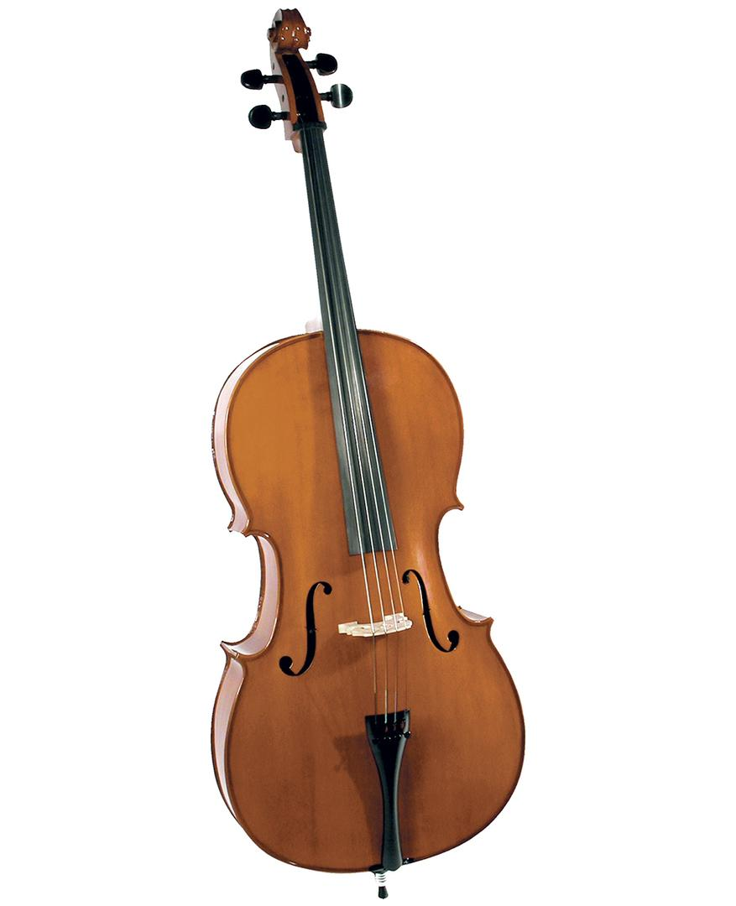 3 เชลโล (Cello) มีรูปร่างเหมือนไวโอลินและวิโอลา แต่มีขนาดโตกว่ามาก คือความ ยาวประมาณ 48.5 นิ้ว ขณะเล่นต้องนั่งเก้าอี้ เอาเครื่องไว้ระหว่างขาทั้งสองข้างหันหน้าเครื่องออก เทคนิคการเล่นเหมือนกับไวโอลินสายทั้งสี่เสียงต่ำกว่าวิโอลา 1 ช่วงคู่ 8 คือ C-G-D-A เสียงของเชลโล นุ่มนวล แสดงอารมณ์เศร้าสร้อย
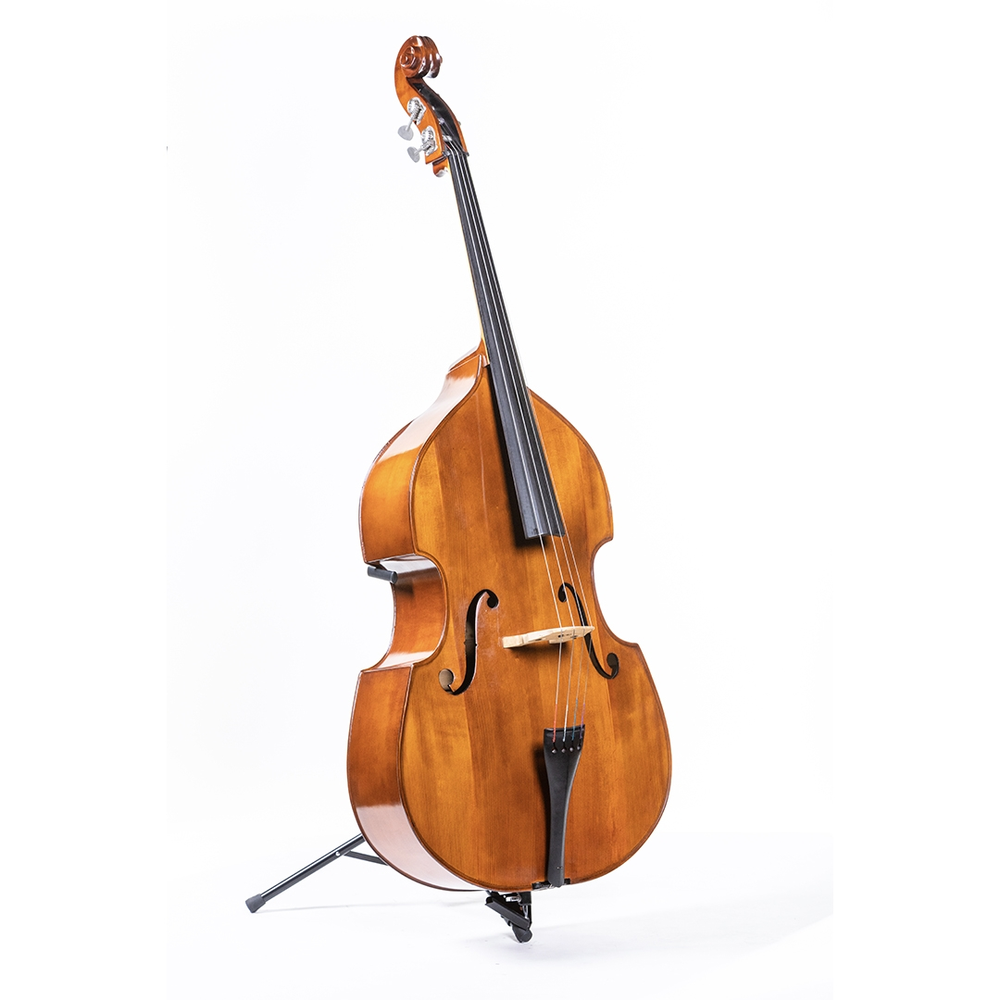 4 ดับเบิลเบส (Double Bass) เป็นเครื่องที่มีขนาดใหญ่ที่สุดในตระกูลไวโอลิน มี ความยาวประมาณ 74 นิ้ว ผู้บรรเลงต้องยืนเล่น เสียงของดับเบิลเบส ต่ำสุดแสดงถึงความมีอำนาจ ความกลัว ความลึกลับ สายทั้งสี่ตั้งเสียงห่างกันเป็นคู่ 4 เพอร์เฟค คือ E- A- D- G
1.2 เครื่องสายประเภทเครื่องดีด (Plucked String) ในกลุ่มนี้ประกอบด้วย
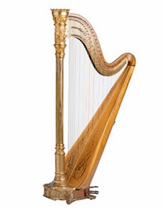 1 ฮาร์พ (Harp) ฮาร์พเป็นพิณโบราณขนาดใหญ่ มีประวัติเก่าแก่มาก ชาวอียิปต์ โบราณใช้ฮาร์พเป็นเครื่องดนตรีสำคัญในราชสำนักของฟาโรห์ ในยุโรปสมัยกลางฮาร์พเป็นเครื่องดนตรี ที่ได้รับความนิยมจากชาวไอริช และเวลส์ เป็นอย่างมาก ฮาร์พมีลักษณะเป็นโครงสามเหลี่ยมขนาดใหญ่ ด้านบนโค้งงอสวยงาม มีสายขึงอยู่ทั้งหมด 47 สาย ช่วงเสียงกว้าง 6 ? Octaves บันไดเสียงพื้นฐานของฮาร์พเป็น Cb Major ที่ฐานของฮาร์พ จะ มีกระเดื่อง 7 อัน สำหรับเหยียบ (ประจำทั้ง 7 เสียง) ถ้าเหยียบจมลงครั้งหนึ่งสายจะดึงขึ้นทำให้เสียงสูง ขึ้นครึ่งเสียง ถ้าเหยียบอีกเป็นครั้งที่สองสายจะตึงขึ้นอีกทำให้เสียงสูงขึ้นอีกทำให้ผู้เล่น เล่นเพลงได้ทุก บันไดเสียงในการบรรเลงฮาร์พผู้เล่นจะต้องนั่งลงให้ไหล่ขวาชิดกับตัวฮาร์พใช้นิ้วมือทั้งสอง ยกเว้นนิ้ว ก้อยดีดสาย เสียงของฮาร์พเบาและนุ่มนวลกว่าเปียโนมากปัจจุบันฮาร์พใช้บรรเลงในวงดนตรีประเภท ออร์เคสตราเท่านั้น
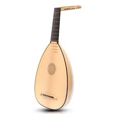 2 ลูท (Lute) เป็นพิณชนิดหนึ่งที่เป็นต้นกำเนิดของเครื่องสายประเภทดีด ลูทมีรูปทรง เหมือนผลส้มผ่าซีก มีสะพานวางนิ้วที่มีช่องปรากฏอยู่ เช่นเดียวกับกีตาร์ แบนโจ แมนโดลิน ฯลฯ ชาวอาหรับโบราณนิยมกันมากแต่ปัจจุบันนี้ไม่ได้รับความนิยม
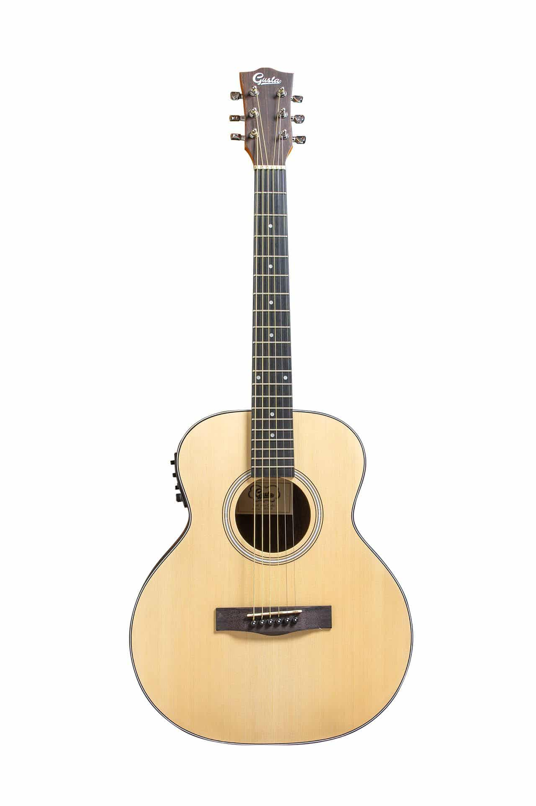 3 กีตาร์ (Guitar) กีตาร์เป็นเครื่องดนตรีที่แพร่หลายมากในปัจจุบันมีรูปร่างคล้ายคลึงกับ พิณลูทแต่ผิดกันตรงที่รูปร่างแบนกว่าในปัจจุบันมีความสำคัญทั้งในวงดนตรีประเภทสตริง แจ๊สร็อค เป็นต้น กีตาร์ประกอบด้วยสาย 6 สาย โดยตั้งระดับเสียงต่ำไปหาสูง ในแต่ละสายดังนี้ E,A,D,G,B,E ไม่ว่าจะเป็นกีตาร์โปร่งธรรมดา หรือกีตาร์ไฟฟ้า นอกจากนี้เครื่องสายประเภทดีดยังมีแมนโดลิน แบนโจ ซึ่งเป็นเครื่องสายประเภทดีดที่มีรูป ร่างคล้ายกีตาร์ แต่มิได้นำมาใช้ในวงดนตรีมากนักส่วนมากใช้ในดนตรีของชาวพื้นเมืองแถบลาติน อเมริกาอย่างไรก็ตามทั้งแมนโดลิน และแบนโจก็เป็นผลการวิวัฒนาการของลูทนั่นเอง
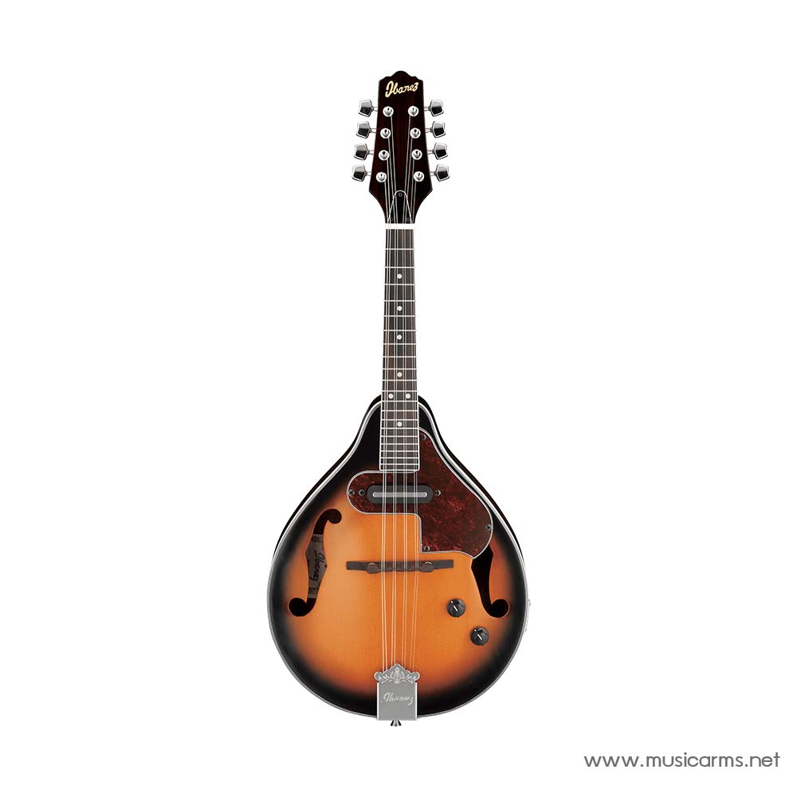 4 แมนโดลิน (Mandolin) เป็นเครื่องดนตรีตระกูลลูท มีสาย 4 คู่ (8สาย) หรือ 6 คู่ (12สาย) ตั้งเสียงเท่ากันเป็นคู่ มีลูกบิดคล้ายกีตาร์ใช้ในการตั้งเสียง และมีนม (Feat) รองรับสาย เวลา เล่นจะใช้นิ้วมือซ้ายจับตัวแมนโดลินและใช้มือขวาดีด ลักษณะการดีดคล้ายการดีดกีตาร์โดยใช้ปิ๊ค (Pick) เสียงที่เกิดจากแมนโดลินมีความไพเราะเป็นเสียงที่มีคุณภาพ เร้าอารมณ์ได้ดีโดยเฉพาะอารมณ์ โศกเศร้าเกี่ยวกับความรัก แมนโดลินมีถิ่นกำเนิดที่ประเทศอิตาลี เป็นเครื่องดนตรีที่ชาวอิตาเลียนนิยม กันแพร่หลาย ในปี ค.ศ. 1713 ได้มีผู้นำเอาแมนโดลินมาเล่นผสมในวงคอนเสิร์ตในประเทศอังกฤษ
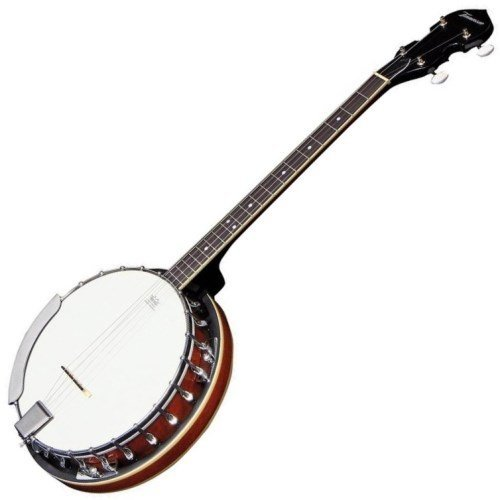 5 แบนโจ (Banjo) เป็นเครื่องดนตรีในตระกูลลูท จุดเริ่มต้นที่มีผู้นำมาเล่นอยู่ในแถบ แอฟริกาตะวันตก (Western Africa) เป็นเครื่องดนตรีพื้นบ้านของพวกนิโกร ต่อมาจึงเป็นที่แพร่หลาย ในหมู่อเมริกันนิโกร วิธีการเล่นคล้ายกับกีตาร์
2.กลุ่มเครื่องลมไม้ (Woodwind Instruments)
เครื่องดนตรีประเภทเครื่องลมไม้ (Woodwind Instruments) ในปัจจุบันมีเครื่องดนตรีหลายเครื่องที่ไม่ได้ทำด้วยไม้เนื่องจากไม้หายาก จึงใช้วัสดุอย่างอื่น สร้างขึ้นแต่วิธีการเกิดเสียงและคุณภาพเสียงก็ยังเหมือนกับทำด้วยไม้ทุกประการเครื่องดนตรีกลุ่มเครื่อง ลมไม้ยังแบ่งได้อย่างกว้าง ๆ เป็น 2 ประเภทคือประเภทเป่าลมเข้าไปในรูเป่า(Blowing into a tube) ลำตัวมีลักษณะเป็นท่อเครื่องเป่าประเภทนี้เป่าลมเข้าทางด้านข้าง และประเภทเป่าลมให้ผ่านลิ้นของ เครื่องดนตรี (Blowing through a reed)เครื่องลมไม้ประเภทขลุ่ย ยังแบ่งตามลักษณะของการเป่าได้ 2 ประเภทคือ ประเภทเป่าตรงปลาย เช่น ขลุ่ยเรคคอร์เดอร์ ประเภทเป่าด้านข้าง เช่น ฟลูต และปิคโคโล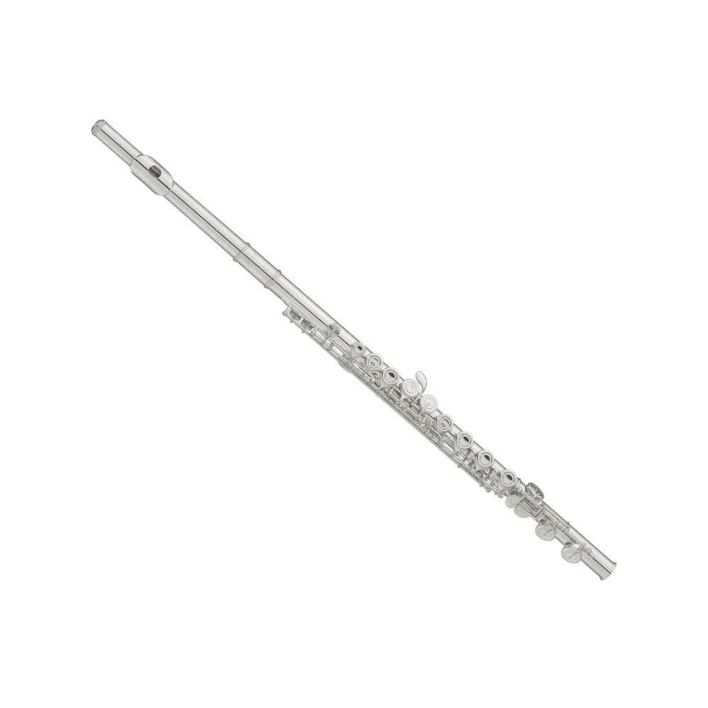 1 ฟลูต (Flute) เป็นเครื่องดนตรีที่เก่าแก่ที่สุดชนิดหนึ่งที่มีพัฒนาการมาจากมนุษย์ก่อน ประวัติศาสตร์ที่คิดใช้กระดูกสัตว์หรือเขาของสัตว์ที่เป็นท่อกลวงหรือไม่ก็ใช้ปล้องไม้ไผ่มาเจาะรูแล้วเป่า ให้เกิดเสียงต่าง ๆ วัตถุนั้นจึงเป็นต้นกำเนิดของเครื่องดนตรีประเภทขลุ่ย ฟลูตเป็นขลุ่ยเป่าด้านข้าง มีความยาว 26 ?นิ้วมีช่วงเสียงตั้งแต่ C กลางจนถึง C สูงขึ้นไปอีก 3 ออคเทฟ เสียงแจ่มใสจึงเหมาะ สำหรับเป็นเครื่องดนตรีประเภทเล่นทำนองใช้เลียนเสียงนกเล็ก ๆ ได้ดีและเสียงต่ำของฟลูตจะให้เสียงที่ นุ่มนวล
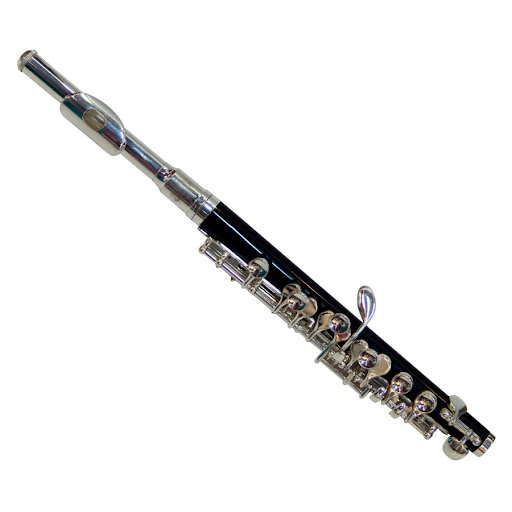 2 พิคโคโล (Piccolo) เป็นขลุ่ยขนาดเล็กมีลักษณะเช่นเดียวกับฟลูตแต่เล็กกว่าทำมาจาก ไม้หรืออีบอร์ไนท์ แต่ปัจจุบันทำด้วยโลหะ ยาวประมาณ 12 นิ้ว เสียงเล็กแหลมชัดเจน แม้ว่าจะเป่าเพียง เครื่องเดียว พิคโคโลเล่นได้ดีเป็นพิเศษโดยเฉพาะการทำเสียงรัว (Trillo) และการบรรเลงเดี่ยว (Solo) เครื่องลมไม้อีกประเภทหนึ่งคือ ประเภทปี่มีส่วนประกอบที่สำคัญคือมีลิ้น (Reed) เป็นตัวสั่น สะเทือนส่วนที่เป็นลิ้นจะอยู่ตรงปลายด้านหนึ่งของปี่เมื่อเป่าลมผ่านลิ้นให้เกิดการสั่นสะเทือนแล้วลมก็ จะเข้าไปในท่อซึ่งทำหน้าที่เป็นตัวขยายเสียงหรือตัวกำธร แล้วออกไปยังปากลำโพง
นอกจากนี้เครื่องดนตรีพวกปี่ยังจำแนกออกได้ตามลักษณะของลิ้นที่ใช้เป็นประเภทลิ้นคู่ (Double reed) และลิ้นเดี่ยว(Single reed)
2.1.1 ประเภทลิ้นคู่ (Double reed)
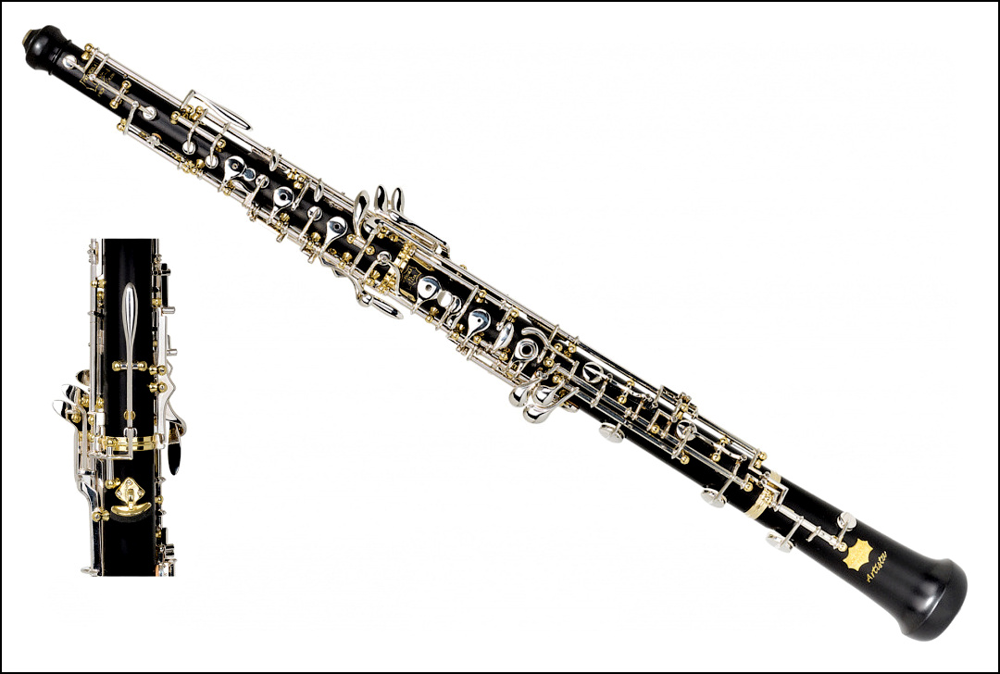 1 โอโบ (Oboe) เป็นปี่ลิ้นคู่ที่เก่าแก่ที่สุด ชาวอียิปต์โบราณ ได้เคยใช้ปี่ที่มีลักษณะ คล้ายคลึงกับปี่โอโบ เมื่อประมาณ 3,500 ปีก่อนคริสต์กาลมาแล้ว ชาวกรีกและชาวโรมันโบราณ มีปี่ลิ้นคู่ชนิดหนึ่งเรียกว่า “ออโรส” (Aulos) โอโบลำตัวยาวประมาณ 25.5 นิ้ว เป็นรูปทรงกรวย ทำด้วยไม้หรืออีบอไนท์ ส่วนลิ้นคู่นั้นทำจากไม้ที่ลำต้นมีข้อและปล้อง จำพวก กก หรือ อ้อ ที่ขึ้นในแถบ เมดิเตอร์เรเนียนลิ้นของปี่โอโบได้รับการผลิตอย่างปราณีตมาแล้วจากโรงงานผู้เล่นส่วนมากนิยมนำมา ตกแต่งเพิ่มเติมให้เหมาะสมกับริมฝีปากของตนเอง โอโบเป็นเครื่องดนตรีที่เล่นยากมาก คนส่วนใหญ่มักเข้าใจว่าโอโบต้องใช้ลมเป่ามาก แต่ ความจริงแล้วแม้แต่เด็กผู้หญิงก็สามารถเป่าได้สิ่งที่เป็นอุปสรรคสำคัญอยู่ตรงที่ลิ้นคู่หรือลิ้นแฝด ผู้เล่น ต้องสามารถเม้มริมฝีปาก และเป่าลมแทรกลงไประหว่างลิ้นคู่ทั้งสองที่บอบบาง เข้าไปในท่อลม เทคนิค การควบคุมลมให้สม่ำเสมอเป็นสิ่งจำเป็นมากจึงต้องฝึกฝนกันเป็นเวลานาน ช่วงเสียงของโอโบกว้าง ประมาณ 2 ออคเทฟครึ่ง เริ่มตั้งแต่ B flat ต่ำถัดจาก C กลาง สำเนียงของโอโบ ไม่สง่าผ่าเผยเหมือน ฟลูตมีลักษณะแบน ๆ คล้ายเสียงออกจมูก เหมาะสำหรับทำนองเศร้า ๆ บรรยากาศของธรรมชาติและ ลักษณะของดินแดนทางตะวันออก หน้าที่ที่สำคัญของโอโบอีกอย่างหนึ่งคือ เป็นเครื่องเทียบเสียงของวง ออร์เคสตรา (A tuning fork for the orchestra) ก่อนการบรรเลงเครื่องดนตรีต่าง ๆ จะต้องเทียบเสียง “ลา” (A)
 2 คอร์ แองเกลส์ (Cor Anglais or English horn) ปี่ชนิดนี้มีลำตัวยาวกว่าปี่โอโบ ดังนั้น
เพื่อง่ายต่อการเป่าส่วนที่ต่อจากที่เป่า(ลิ้น)กับลำตัวปี่จึงต้องงอโค้งเป็นมุมและเกิดคำว่า “อองเกล
(Angle)” ขึ้นต่อมาคำนี้ได้เพี้ยนไปกลายเป็นอองแกลส์ (Anglais) ในภาษาฝรั่งเศส ซึ่งตรงกับภาษา
อังกฤษว่า English ส่วนคำว่า “คอร์” (Cor) ในภาษาฝรั่งเศส ซึ่งตรงกับภาษาอังกฤษว่า ฮอร์น (Horn)
ปี่ชนิดนี้นอกจากมีชื่อประหลาดแล้ว ยังมีรูปร่างที่น่าทึ่งอีกด้วย คือส่วนที่ต่อจากที่เป่า (ลิ้นคู่) เป็นท่อลม
โลหะโค้งงอติดกับลำตัวปี่ ซึ่งปี่โอโบไม่มี ตรงปลายสุดที่เป็นปากลำโพง (Bell) ป่องเป็นกระเปาะกลม ๆ
ซึ่งปี่โอโบมีลำโพงคล้ายปี่คลาริเนต คอร์ แองเกลส์เป็นปี่ตระกลูเดียวกับโอโบแต่มีขนาดใหญ่กว่าและมี
รูปร่างที่แตกต่างไปจากโอโบระดับเสียงต่ำกว่าโอโบและเวลาเล่นจะต้องมีสายติดกับลำตัวปี่โยงไปคล้อง
คอผู้เล่นเพื่อพยุงน้ำหนักของปี่
2 คอร์ แองเกลส์ (Cor Anglais or English horn) ปี่ชนิดนี้มีลำตัวยาวกว่าปี่โอโบ ดังนั้น
เพื่อง่ายต่อการเป่าส่วนที่ต่อจากที่เป่า(ลิ้น)กับลำตัวปี่จึงต้องงอโค้งเป็นมุมและเกิดคำว่า “อองเกล
(Angle)” ขึ้นต่อมาคำนี้ได้เพี้ยนไปกลายเป็นอองแกลส์ (Anglais) ในภาษาฝรั่งเศส ซึ่งตรงกับภาษา
อังกฤษว่า English ส่วนคำว่า “คอร์” (Cor) ในภาษาฝรั่งเศส ซึ่งตรงกับภาษาอังกฤษว่า ฮอร์น (Horn)
ปี่ชนิดนี้นอกจากมีชื่อประหลาดแล้ว ยังมีรูปร่างที่น่าทึ่งอีกด้วย คือส่วนที่ต่อจากที่เป่า (ลิ้นคู่) เป็นท่อลม
โลหะโค้งงอติดกับลำตัวปี่ ซึ่งปี่โอโบไม่มี ตรงปลายสุดที่เป็นปากลำโพง (Bell) ป่องเป็นกระเปาะกลม ๆ
ซึ่งปี่โอโบมีลำโพงคล้ายปี่คลาริเนต คอร์ แองเกลส์เป็นปี่ตระกลูเดียวกับโอโบแต่มีขนาดใหญ่กว่าและมี
รูปร่างที่แตกต่างไปจากโอโบระดับเสียงต่ำกว่าโอโบและเวลาเล่นจะต้องมีสายติดกับลำตัวปี่โยงไปคล้อง
คอผู้เล่นเพื่อพยุงน้ำหนักของปี่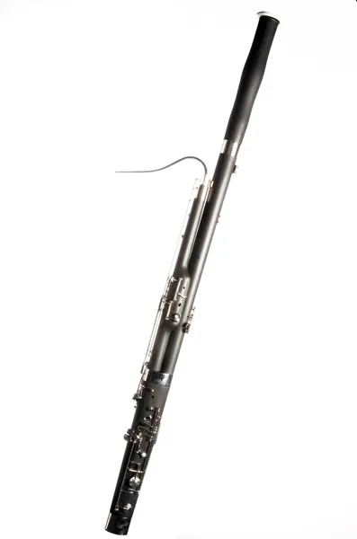 3 บาสซูน (Bassoon) เป็นปี่ขนาดใหญ่ใช้ลิ้นคู่เช่นเดียวกับโอโบรูปร่างของบาสซูนค่อนข้าง จะประหลาดกว่าปี่ชนิดอื่น ๆ ได้รับฉายาว่าเป็น “ตัวตลกของวงออร์เคสตรา” (The Clown of the Orchestra) ทั้งนี้เพราะเวลาบรรเลงเสียงสั้น ๆ ห้วน ๆ (Staccato) อย่างเร็ว ๆ จะมีเสียงดัง ปูด…ปู๊ด… คล้ายลักษณะท่าทางของตัวตลกที่มีอากัปกริยากระโดดเต้นหยอง ๆ ในโรงละครสัตว์เนื่องจากความใหญ่ โตของท่อลม ซึ่งมีความยาวถึง 109 นิ้ว แต่เพื่อไม่ให้ยาวเกะกะ จึงใช้วิธีทบท่อลมให้เหลือความยาว ประมาณ 4 ฟุตเศษ บาสซูนมีน้ำหนักมากจึงต้องมีสายคล้องคอเพื่อช่วยพยุงน้ำหนักเรียกว่า Sling เพื่อ ให้มือทั้งสองของผู้เล่นขยับไปกดแป้นนิ้วต่าง ๆ ได้สะดวก เสียงของบาสซูนต่ำนุ่มลึก ถือเป็นแนวเบสของ กลุ่มเครื่องลมไม้ นอกจากนี้แล้วยังสามารถเล่นทำนองเดียวได้อย่างไพเราะอีกด้วย
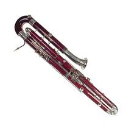 4 คอนทราบาสซูนหรือดับเบิลบาสซูน (Contra Bassoon or Double Bassoon) คอนทราบาสซูน ประดิษฐ์ขึ้นครั้งแรกโดยชาวอังกฤษสองคน ชื่อ สโตน และ มอร์ตัน (Stone & Morton) ต่อมา เฮคเคล (Heckel) ได้ปรับปรุงโดยติดกลไกของแป้นนิ้วต่าง ๆ ให้สมบูรณ์ และนำมาใช้จนถึงทุกวันนี้ คอนทราบาสซูนเป็นปี่ที่ใหญ่กว่าปี่บาสซูน ประมาณเท่าตัวคือมีความยาว ของท่อลมทั้งหมดถึง 18 ฟุต 4 นิ้ว หรือ 220 นิ้วพับเป็นสี่ท่อน แต่ละท่อนเชื่อมต่อด้วย Butt และข้อต่อ รูปตัว U ที่ปลายท่อนสุดท้ายจะต่อกับลำโพงโลหะที่คว่ำลงในแนวดิ่ง แต่คอนทราบาสซูนอีกชนิดหนึ่ง ลำโพงหงายขึ้นในแนวดิ่ง ให้เสียงต่ำกว่าบาสซูน ลงไปอีก 1 ออคเทฟ เสียงจะนุ่มไม่แข็งกร้าวเหมือน บาสซูน แต่ถ้าบรรเลงเสียงต่ำอย่างช้า ๆ ในวงออร์เคสตราขณะที่เครื่องดนตรีอื่น ๆ เล่นอย่างเบา ๆ จะ สร้างภาพพจน์คล้ายมีงูใหญ่เลื้อยออกมาจากที่มืด โอกาสที่ใช้ในการบรรเลงมีไม่มากนักทั้งนี้ก็ขึ้นอยู่ กับบทเพลงนั้น ๆ
2.1.2 เครื่องดนตรีประเภทปี่ลิ้นเดียว (Single Reed) ประกอบด้วย
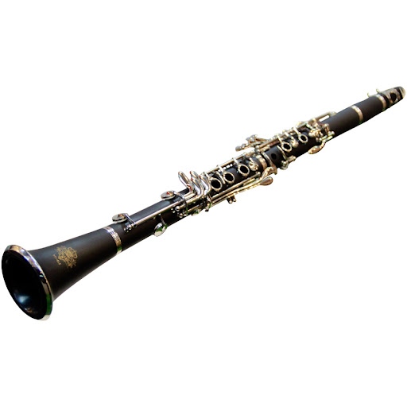 1 คลาริเนต (Clarinet) เป็นเครื่องดนตรีที่รู้จักกันแพร่หลายกว่าเครื่องอื่น ๆ ในบรรดา เครื่องลมไม้ด้วยกัน คลาริเนตเป็นเครื่องดนตรีที่ใช้ได้ในวงดนตรีเกือบทุกประเภทและเป็นเครื่องดนตรีที่ สำคัญในวงออร์เคสตรา วงโยธวาทิต และวงแจ๊ส ในวงโยธวาทิตปี่คลาริเนตถือเป็นเครื่องดนตรีที่สำคัญและได้รับสมญาว่าเป็นไวโอลินของวง อยู่ที่มีลิ้นเดียว คลาริเนตยาวกว่าโอโบเล็กน้อย รูปทรงของท่อลมเป็นทรงกระบอก ปากลำโพงบานเป็น ทรงระฆัง ความยาวทั้งสิ้นประมาณ 26 นิ้ว คลาริเนตมีเสียงกว้างที่สุดในบรรดาเครื่องลมไม้ ปี่ชนิดนี้ แตกต่างกับฟลูตในเรื่องคุณสมบัติของเสียง เสียงของฟลูตจากเสียงต่ำไปเสียงสูง ไม่ค่อยแตกต่างกัน เท่าใด แต่เสียงของคลาริเนตแตกต่างกันมากจนสังเกตเห็นได้อย่างชัดเจน คลาริเนตให้เสียงสูงสดใส่ ร่าเริง คม ชัดเจน มีความคล่องตัวในการบรรเลงสูง เวลาเป่าผู้เป่าจะเม้มริมฝีปากให้ลิ้นของปี่แตะอยู่บน ริมฝีปากล่าง ส่วนริมฝีปากบนผู้เป่าจะทำให้เกิดคุณสมบัติของเสียงตลอดจนความดังหรือเบาให้ แตกต่างกันโดยการให้ลิ้นของปี่เข้าไปอยู่ในปากมากหรือน้อยและการเม้มริมฝีปากล่างกดกับลิ้นปี่ หนัก – เบา เพียงใด ในวงโยธวาทิตปี่คลาริเนตถือเป็นเครื่องดนตรีที่สำคัญและได้รับสมญาว่าเป็นไวโอลินของวง โยธวาทิต ปี่คลาริเนตมีหลายขนาดแต่ที่นิยมใช้โดยทั่วไปในปัจจุบันมี Bb คลาริเนต และ Eb คลาริเนต
 2 เบส คลาริเนต (Bass Clarinet) เป็นปี่คลาริเนตขนาดใหญ่มีช่วงเสียงต่ำกว่า
คลาริเนตธรรมดา 1 ออคเทฟ ลำตัวยาวกว่าคลาริเนต ส่วนปากลำโพงทำด้วยโลหะและงอนขึ้นส่วนที่
เป่างอโค้งทำมุมกับตัวปี่ วัตถุประสงค์ของการประดิษฐ์เบสคลาริเนตขึ้นเพื่อให้มีเสียงของเครื่องดนตรี
ในตระกูลคลาริเนตครบทุกเสียง
2 เบส คลาริเนต (Bass Clarinet) เป็นปี่คลาริเนตขนาดใหญ่มีช่วงเสียงต่ำกว่า
คลาริเนตธรรมดา 1 ออคเทฟ ลำตัวยาวกว่าคลาริเนต ส่วนปากลำโพงทำด้วยโลหะและงอนขึ้นส่วนที่
เป่างอโค้งทำมุมกับตัวปี่ วัตถุประสงค์ของการประดิษฐ์เบสคลาริเนตขึ้นเพื่อให้มีเสียงของเครื่องดนตรี
ในตระกูลคลาริเนตครบทุกเสียง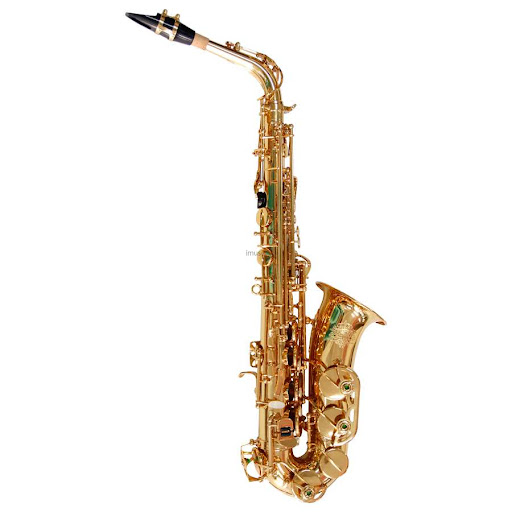 3 แซกโซโฟน (Saxophone) มีลักษณะก้ำกึ่งระหว่างเครื่องลมทองเหลืองและเครื่องลมไม้ มีอายุน้อยเมื่อเทียบกับเครื่องดนตรีชนิดอื่น ๆ ประดิษฐ์เมื่อ ค.ศ. 1840 ที่นครปารีส ประเทศฝรั่งเศส โดย อดอล์ฟ แซกเป็นผู้ผลิต ซึ่งเขาผลิตแซกโซโฟนขึ้นในราว ค.ศ. 1840 ในขณะนั้นได้มีหัวหน้าวง โยธวาทิตมาจ้างให้เขาผลิตเครื่องดนตรีชนิดใดก็ได้ซึ่งสามารถเล่นเสียงให้ดัง เพื่อใช้ในวงโยธวาทิต (Military Band) และต้องการให้เครื่องดนตรีชนิดใหม่นี้เป็นเครื่องลมไม้ เขาจึงนำเอาเครื่องดนตรี ประเภทเครื่องทองเหลืองชนิดหนึ่งซึ่งล้าสมัยแล้วเรียกว่าแตรออพิคเลียด (Ophiclede) มาถอดที่เป่าอัน เดิมออกแล้วเอาที่เป่าของคลาริเนตมาใส่แทนจากนั้นเขาได้แก้กลไกของกระเดื่องต่าง ๆ และปรับปรุงจน สามารถใช้งานได้ แซกโซโฟนจึงได้กำเนิดขึ้นมาเป็นชิ้นแรกของโลก ในอดีตแซกโซโฟนมีฉายาว่าคลาริเนตทองเหลือง เพราะสามารถเล่นได้อย่างคล่องแคล่ว ปราดเปรียวเหมือนคลาริเนต ในปัจจุบันแซกโซโฟนได้รับความนิยมสูงสุด ดังจะเห็นได้จากศิลปินชาว ต่างประเทศได้นำมาแสดงในเมืองไทยหลายครั้ง และมีการจัดอันดับผู้ที่มีความสามารถในการเล่น แซกโซโฟนของโลกด้วย เช่น Kenny G, Grover Washington,Jr., Sadao Watanabe เป็นต้น ในวงออร์เคสตราไม่นิยมใช้แซกโซโฟน เพราะบทบรรเลงที่ใช้สำหรับวงออร์เคสตราส่วนใหญ่เกิดก่อน แซกโซโฟน แต่ปัจจุบันแซกโซโฟนเป็นเครื่องเป่าที่มีบทบาทมากทั้งในวงโยธวาทิต วงแจ๊ส วงคอม โบ ตลอดจนวงดนตรีสมัยใหม่ แซกโซโฟนที่นิยมใช้ในปัจจุบันมี 4 ขนาด คือ บีแฟลตโซปราโน อีแฟลตอัลโต บีแฟลตเทเนอร์ และอีแฟลตบาริโทน
3.เครื่องลมทองเหลือง (Brass Instruments)
เครื่องดนตรีในกลุ่มเครื่องลมทองเหลืองนี้เรียกรวม ๆ ว่ากลุ่มแตร ส่วนประกอบที่สำคัญของ เครื่องดนตรีกลุ่มนี้ คือ ท่อลมทำด้วยโลหะขนาดต่าง ๆ กันการเกิดเสียงเกิดจากการเป่าลมให้เกิดการสั่น สะเทือนที่ริมฝีปากของผู้เล่น ผ่านเข้าไปในปากเป่า (Mouth Piece) การเป่าเครื่องลมทองเหลืองจึงขึ้น อยู่กับริมฝีปากเป็นสำคัญเครื่องดนตรีในกลุ่มเครื่องลมทองเหลืองที่ใช้อยู่ในปัจจุบันมีดังนี้
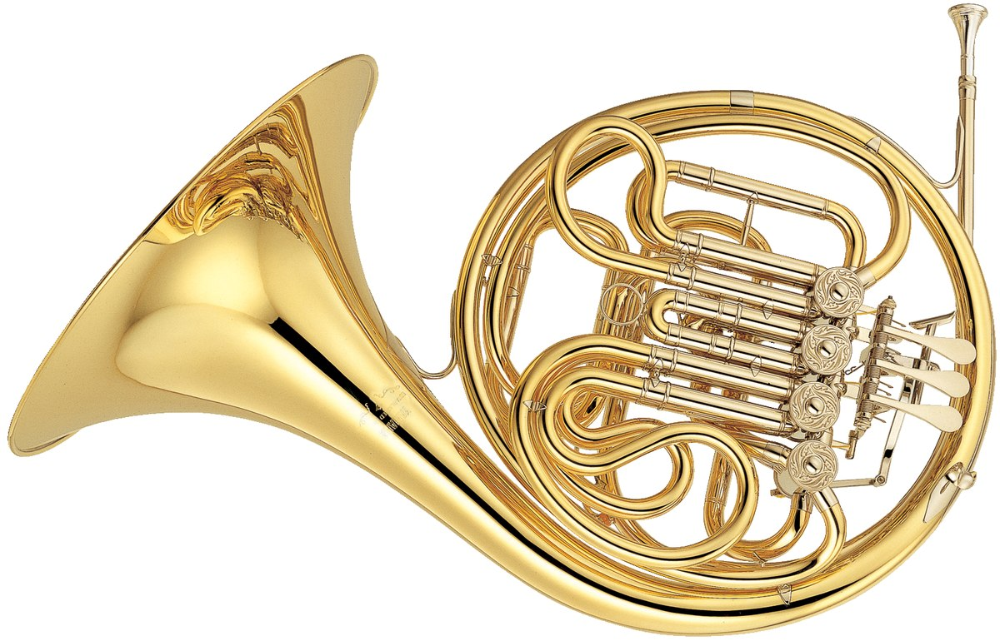 1 เฟรนช์ฮอร์น (France horn) ปัจจุบันเรียกว่า “ฮอร์น” ต้นกำเนิดของฮอร์นคือเขาสัตว์ ฮอร์นที่เก่าแก่ที่สุดคือ โชฟาร์ (Shofar) ของชาวฮิบรู ทำด้วยเขาแกะ เฟรนช์ฮอร์นเป็นแตรที่มีช่วงเสียงกว้างถึง 3 ออคเทฟครึ่ง มีท่อยาวประมาณ 12-15 ฟุต แต่นำมาขดเป็นวงโค้งไปมาเพื่อให้สะดวกแก่ผู้เป่าจน เหลือความยาวจากปากเป่าถึงปากลำโพงเพียง 20 นิ้ว เสียงของเฟรนช์ฮอร์น สดใส สง่า จัดว่าเป็นพระเอกในบรรดาเครื่องลมทองเหลือง นักแต่งเพลงหลายคนใช้เสียงของเฟรนซ์ฮอร์นบรรยายความงามของธรรมชาติเช่น ท้องทะเลครามอันกว้างใหญ่ไพศาล และหุบเขาที่มีเสียงสะท้อนก้องกลับไปกลับมา เนื่องจากท่อลมมีขนาดยาวมากการบังคับริมฝีปากในการเป่าจึงเป็นเรื่องยาก
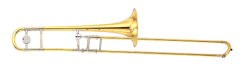 2 ทรอมโบน (Trombone) เป็นแตรซึ่งใช้มาตั้งแต่คริสต์ศตวรรษที่ 15 ในพิธีศาสนาและพิธียุรยาตราร่วมกับแตรโบราณ ทรอมโบนประกอบด้วยท่อลมสวมซ้อนเลื่อนเข้า – ออกได้ (Telescopic slide) ขนาดยาวโค้งได้สองทบ สองในสามของท่อลมนี้เป็นท่อทรงกระบอกเช่นเดียวกับ ทรัมเปตส่วนที่เหลือค่อย ๆ บานออกเป็นปากลำโพง ส่วนที่เป็นท่อลมทรงกระบอกจะเป็นท่อสองชั้นสวมกันไว้ในลักษณะรูปตัว U เลื่อนเข้าออกเพื่อปรับระดับเสียง เมื่อเลื่อนออกจะยาวประมาณ 9 ฟุต แต่เมื่อเลื่อนเข้า จะเหลือเพียง 3 ฟุตเศษ ทรอมโบนมีเสียงทุ้ม ห้าว ไม่สดใส เหมือนทรัมเปต ปัจจุบันนิยมใช้แพร่หลายในวงดนตรีชนิดต่าง ๆ เช่นเดียวกันทรัมเปตประกอบด้วยเทเนอร์ทรอมโบน (Tenor Trombone)และ เบสทรอมโบน (Bass Trombone)
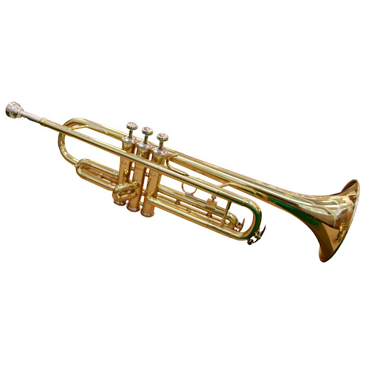 3 ทรัมเปต (Trumpet) ในสมัยโบราณชาวยุโรปถือว่าแตรทรัมเปตเป็นของคนชั้นสูงผู้ ที่จะมีสิทธิเป็นเจ้าของแตรชนิดนี้ได้ต้องเป็นพระเจ้าแผ่นดิน หรือเจ้านายชั้นสูงหรือไม่ก็นักรบชั้นแม่ทัพ สามัญชนไม่มีสิทธิที่จะเป็นเจ้าของแตรชนิดนี้ ทรัมเปตเป็นแตรที่มีท่อลมรูปทรงกระบอกขนาด ของท่อลมมีเส้นผ่าศูนย์กลางประมาณ 3 นิ้ว โค้งงอทบกันเป็นสามทบ ติดลูกสูบเพื่อใช้บังคับเสียง3 อัน ( 3 valve) อยู่ตรงกลางลำตัว ผู้เป่าจะใช้นิ้วขวาบังคับลูกสูบทั้งสามโดยการกดลงหรือผ่อนให้ขึ้นแนว ตั้ง กำพวด (Mouthpiece) ของทรัมเปตเป็น “กำพวดรูปถ้วยหรือระฆัง” ซึ่งทำให้แตร ทรัมเปต สามารถเล่นเสียงสูงได้สดใสแผดกล้าให้ความรู้สึกตื่นเต้นได้ดีแต่ถ้าเล่นเสียงต่ำจะให้ความนุ่มนวล ลักษณะคล้ายเสียงกระซิบกระซาบได้ดีเช่นเดียวกันบางครั้งผู้เป่าต้องการลดเสียงของแตรให้เบาลงทำให้ เกิดเสียงที่แปลกหูก็สามารถใช้ “มิวท์” (Mute) สวมเข้าไปในปากลำโพงของแตร ในปัจจุบัน ทรัมเปต เป็นแตรที่แพร่หลายและใช้ในวงดนตรีเกือบทุกประเภท
4. กลุ่มเครื่องคีย์บอร์ด (Keyboard Instruments)
เครื่องดนตรีในกลุ่มนี้มักนิยมเรียกทับศัพท์ในภาษาอังกฤษว่า“เครื่องดนตรีประเภท คีย์บอร์ด” ลักษณะเด่นของเครื่องดนตรีที่อยู่ในกลุ่มนี้ก็คือมีลิ่มนิ้วสำหรับกดเพื่อปรับเปลี่ยนระดับเสียง ดนตรี ลิ่มนิ้วสำหรับกดเรียกว่า “คีย์ (Key)” เครื่องดนตรีแต่ละชนิดมีจำนวนคีย์ไม่เท่ากันโดยปกติสี ของคีย์เป็นสีขาวกับดำ คีย์สีดำโผล่สูงขึ้นมามากกว่าคีย์สีขาว การเกิดเสียงของเครื่องดนตรีในกลุ่มนี้มีหลายลักษณะเช่นเปียโน ฮาร์ปสิคอร์ด คลาวิคอร์ด เกิดเสียงโดยการกดคีย์ที่ต้องการแล้วคีย์นั้นจะส่งแรงไปที่กลไกต่าง ๆ ภายในเครื่องเพื่อที่จะไปทำให้สาย โลหะที่ขึงตึงสั่นสะเทือนทำให้เกิดเสียงดังขึ้น เครื่องดนตรีประเภทคีย์บอร์ดบางชนิดใช้ลมพ่นไปยังลิ้น โลหะให้สั่นสะเทือนทำให้เกิดเสียง ในปัจจุบันนิยมใช้น้อยมากเช่น ออร์แกน แอกคอร์เดียน สำหรับ เมโลเดียนและเมโลดิกาซึ่งนำมาใช้ประกอบการเรียนการสอนในโรงเรียนระดับอนุบาลจนถึงระดับ ประถมศึกษานั้นก็จัดอยู่ในเครื่องดนตรีประเภทคีย์บอร์ดเช่นกัน ในปัจจุบันนี้เครื่องดนตรีประเภทคีย์บอร์ดที่เกิดเสียงโดยใช้วงจรอิเล็กโทรนิกส์ ได้รับความ นิยมมากเพราะสามารถเลียนแบบเสียงเครื่องดนตรีต่าง ๆ ได้หลายชนิด ซึ่งได้พัฒนามาจากออร์แกน ไฟฟ้านั้นเองมีหลายชื่อแต่ละชื่อมีคุณลักษณะแตกต่างกันไปเช่น เครื่องอิเล็กโทนคือเครื่องดนตรีประเภท คีย์บอร์ดที่มีจังหวะในตัวสามารถบรรเลงเพลงต่าง ๆ ได้ด้วยนักดนตรีเพียงคนเดียว ในยุคคอมพิวเตอร์เครื่องดนตรีประเภทคีย์บอร์ดได้วิวัฒนาการไปมากเสียงต่าง ๆ มีมากขึ้น นอกจากเสียงดนตรีแล้วยังมีเสียงเอฟเฟคต่าง ๆ ให้เลือกใช้มากเสียงต่าง ๆ เหล่านี้เป็นเพียงเสียงที่สังเคราะห์ ขึ้นมาด้วยระบบอิเล็กโทรนิกดังนั้นเครื่องดนตรีประเภทนี้จึงถูกเรียกว่า “ซินธิไซเซอร์ (Synthesizer)”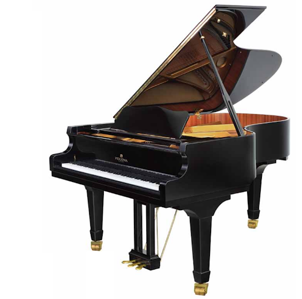 1 เปียโน (Piano) เปียโนเป็นเครื่องดนตรีประเภทคีย์บอร์ดประเภทใช้สายเสียงหรือ ประเภทลิ่มนิ้วที่มีวิวัฒนาการมาจากฮาร์ปสิคอร์ด (Harpsichord) ประดิษฐ์ขึ้นครั้งแรกที่เมืองฟลอเรนซ์ ในประเทศอิตาลี ในต้นศตวรรษที่ 18 เดิมมีชื่อเรียกว่าเปียโนฟอร์เตเพราะทำได้ทั้งเสียงเบาและเสียงดัง สายเสียงจะถูกตีด้วยค้อนเชื่อมโยงไปที่คีย์กดโดยผ่านเครื่องกลไกซับซ้อนที่เรียกว่า แอคชั่น (Action)
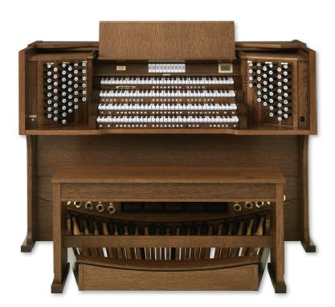 2 ออร์แกน (Organ) เป็นเครื่องดนตรีคีย์บอร์ดประเภทใช้ลมที่มีขนาดใหญ่ที่สุดกล่าวกัน ว่าเป็น “The King of Instruments” เป็นเครื่องดนตรีสำคัญในโบสถ์ใช้บรรเลงประกอบบทเพลงร้อง ทางศาสนาที่เรียกว่า “เพลงโบสถ์” (Church Music) จึงมักเรียกออร์แกนที่อยู่ในโบสถ์ว่าเป็น “ออร์แกน โบสถ์” (Church Organ) เมื่อมีลมเป่าผ่านท่อทำให้เกิดเสียงท่อละหนึ่งเสียงออร์แกนมีแผงคีย์สำหรับ กดด้วยนิ้วมือและแผงคีย์เหยียบด้วยเท้าแผงคีย์ที่กดเล่นด้วยมือเรียกว่าแมนน่วล (Manual) แผงคีย์ที่ เหยียบด้วยเท้าเรียกว่าเพดัล (Pedal) การบังคับกลุ่มท่อต่าง ๆ ซึ่งจัดไว้เป็นพวกเดียวกันทำได้โดยการ ใช้ปุ่มกดหรือคันยกขึ้นลงที่เรียกว่าสต็อป (Stops) ออร์แกนขนาดใหญ่จะมีกลุ่มท่อเปลี่ยนเสียงเรียกว่า ไพพ์ (Pipes) เป็นจำนวนมากเพื่อใช้สร้างสีสันแห่งเสียงได้หลากหลาย ออร์แกนสมัยใหม่ใช้ไฟฟ้าบังคับ แทนลมซึ่งตามแบบดั้งเดิมนั้นลมที่ใช้เกิดจากการอัดลมด้วยเท้าของผู้เล่นหรือไม่ก็มีผู้ช่วยอัดลมแทนให้
4.1 เครื่องดนตรีมีระดับเสียงแน่นอน เครื่องดนตรีในกลุ่มนี้มีระดับเสียงสูงต่ำ เหมือนกับ เครื่องดนตรีประเภทอื่นเกิดเสียงโดยการตีกระทบ
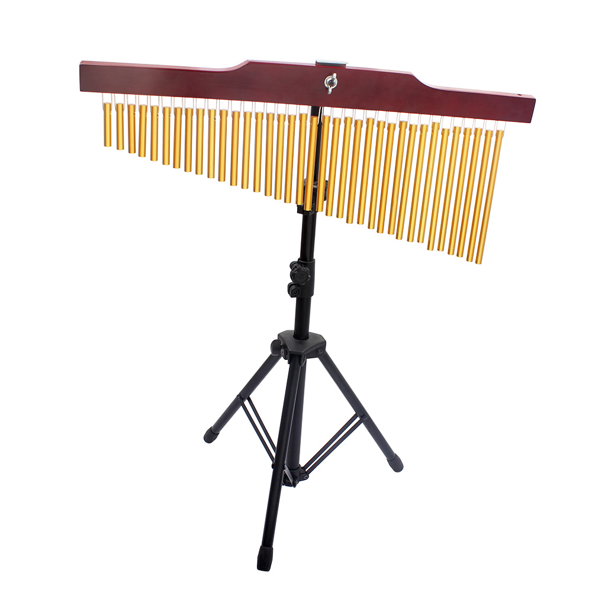 1 ระฆังราว (Tubular Bells) ในภาษาอังกฤษเรียกระฆังราวว่า “Orchestral Bells” และ “Chimes” เครื่องดนตรีชนิดนี้ประดิษฐ์ขึ้นเพื่อเลียนเสียงระฆังจริง ๆ ทำด้วยท่อโลหะแขวนเรียง ตามลำดับเสียงต่ำไปยังเสียงสูงท่อโลหะที่มีขนาดสั้นจะเป็นเสียงสูงส่วนท่อยาวจะเป็นเสียงต่ำ แขวนกับ โครงโลหะในแนวดิ่ง ใช้ไม้ตีที่ปลายท่อด้านหัวจะเกิดเป็นเสียงเหมือนเสียงระฆัง
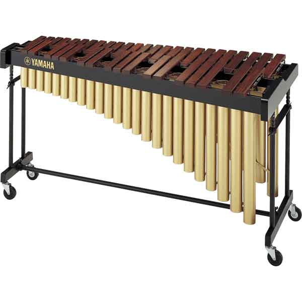 2 มาริมบา (Marimba) คือเครื่องตีกระทบที่มีระดับเสียงแน่นอนเป็นระนาดของดนตรี ตะวันตก ลักษณะทั่ว ๆ ไปเหมือนกับไซโลโฟนหรือไวปราโฟนเป็นระนาดไม้ขนาดใหญ่ลูกระนาดทำด้วย ไม้ที่มีชื่อว่า “โรสวู้ด” ใต้ลูกระนาดมีท่อโลหะติดอยู่เพื่อเป็นตัวขยายเสียง
4.2 เครื่องดนตรีมีระดับเสียงไม่แน่นอน เครื่องดนตรีในกลุ่มนี้ไม่มีระดับเสียงแน่นอน หน้าที่สำคัญก็คือใช้เป็นเครื่องดนตรีประกอบจังหวะเกิดเสียงโดยการตี สั่น เขย่า เคาะ หรือขูด ประกอบด้วย
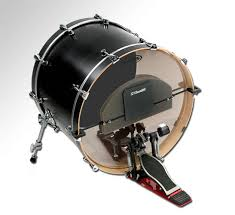 5 กลองใหญ่ (Bass drum) คือเครื่องตีกระทบ มี 2 หน้าขึงด้วยหนังกลอง กลองใหญ่ที่ใช้ในวงออร์เคสตราจะ มีขนาดใหญ่กว่า 32 นิ้ว ถ้าใช้ในวงโยธวาทิตจะมีขนาดตั้งแต่ 24-32 นิ้ว ตีด้วยไม้ตี ปลายไม้ข้างหนึ่งทำเป็นปมไว้สำหรับใช้ ตีกระทบกับหนังกลอง ปมนั้นอาจจะหุ้มด้วยสักหลาด ไม้ก็อก ผ้านวม หรือฟองน้ำ เสียงกลองใหญ่ตีเน้นย้ำจังหวะเพื่อให้ เกิดความหนักแน่น หรืออาจจะใช้รัวเพื่อให้เกิดความตื่นเต้น รัวเพื่อสร้างจุดสนใจในบทเพลงเพิ่มขึ้นก็ได้ 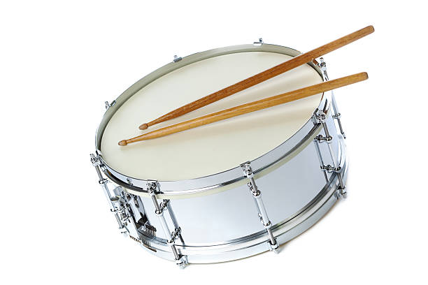 6 กลองเล็ก (Snare drum) กลองเล็ก คือเครื่องตีกระทบ มี 2 หน้า ขึงด้วยหนังกลอง ลักษณะเฉพาะก็คือหน้ากลองด้านล่างขึงคาดไว้ด้วยสายสะแนร์ทำด้วยเอ็นสัตว์ในปัจจุบันสายสะแนร์ มีทั้งที่ทำด้วยไนล่อนและทำด้วยเส้นลวดโลหะ กลองเล็กมีชื่อเรียกหลายชื่อ เช่น Snare drum มีขาตั้งรองรับ ตัวกลองใช้เป็นส่วนหนึ่งของกลองชุดหรือนำมาใช้บรรเลงประกอบจังหวะสำหรับวงออร์เคสตราหรือวงดนตรี อื่น ๆ ที่นั่งบรรเลง สำหรับวงโยธวาทิตและแตรวงมีตัวยึดกลองทำด้วยโลหะคล้องยึดไว้กับลำตัวของผู้ตีกลอง จะอยู่ด้านหน้าของผู้ตี